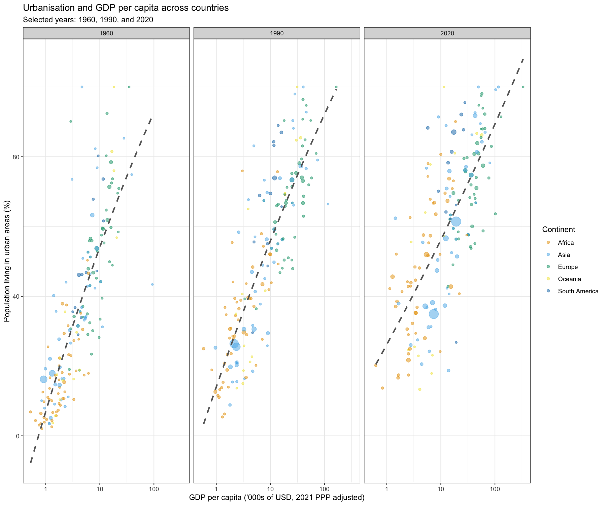

Tutorial Class 06 Set 01 - Using Variation in Data to Tell a Story¶
Learning Goals¶
By the end of this tutorial, you should be able to:
- Identify whether a dataset contains cross-sectional, time series, or panel variation
- Diagnose whether a dataset is tidy and explain how its structure affects analysis
- Tidy and join multiple country-level datasets to build a usable country-year analysis dataset
- Formulate and scope a question that can be answered with the available data
- Create a clear graph or table that helps communicate a relationship in the data
- Write a short, non-technical brief that explains what the data show and why it matters for policy
The Policy Challenge¶
An international policy think tank is preparing a briefing on how countries change as they develop. Some policymakers are interested in whether rising incomes are closely tied to longer lives. Others want to know whether higher incomes are associated with greater urbanisation and the pressures that come with it, such as demand for housing, transport, and public services.
Your team has been given a set of messy country-level datasets, but the files are spread across multiple tables and are not yet ready for analysis. Your task is to work out what kind of variation the data contain, turn them into a usable dataset, and produce clear evidence that can support a short policy brief.
R packages for today¶
library(tidyverse)
library(ggokabeito)
Prepare these Exercises before Class¶
Prepare these exercises before coming to class. Plan to spend 40 minutes on these exercises.
Exercise 1: Recognising Different Kinds of Data¶
Data can vary across people, firms, products, places, and time. Before we start working with this week’s datasets, it is useful to step back and think about the kinds of variation different datasets contain.
(a)
Look back at the datasets in the table below from earlier in the course. For each one:
- classify the dataset as cross-sectional, time series, or panel
- describe what one row represents
- identify the cross-sectional unit where relevant
- identify the time unit where relevant
| Dataset | Where it appeared in the course | Data type | What does one row represent? | Cross-sectional unit | Time unit |
|---|---|---|---|---|---|
| Cookie Cats | Week 2 Lecture | ||||
| Dominick Beer Sales | Week 3 Lecture | ||||
| Melbourne Housing | Week 4 Tutorial | ||||
| ASX 200 Firm Financials | Week 4 Lecture |
(b)
In your own words, explain the difference between the following three types of data:
- Cross-sectional data
- Time series data
- Panel data
Solution
(a)
| Dataset | Where it appeared in the course | Data type | What does one row represent? | Cross-sectional unit | Time unit |
|---|---|---|---|---|---|
| Cookie Cats | Week 2 Lecture | Cross-sectional | One player | Player | Not applicable |
| Dominick Beer Sales | Week 3 Lecture | Panel | One product in one store in one week | Product and store | Week |
| Melbourne Housing | Week 4 Tutorial | Cross-sectional | One house listing or sale | Property | Not applicable |
| ASX 200 Firm Financials | Week 4 Lecture | Cross-sectional | One firm in 2024 | Firm | Not applicable |
The tricky case here is ASX 200 Firm Financials. Even though firms have financial data over time in the real world, the dataset we worked with only contained one year, so the dataset itself is cross-sectional.
(b)
Explanations of the three types of data:
- Cross-sectional data record many units at one point in time, or with no meaningful time dimension in the dataset. Each row is usually a different person, firm, product, or place.
- Time series data record one unit repeatedly over time. Each row is usually a different time period, such as a day, month, or year.
- Panel data record many units repeatedly over time. Each row combines a cross-sectional unit with a time period, such as a firm-year or store-week observation.
Exercise 2: Using Variation in Data to Tell a Story¶
Watch the Gapminder video available here and answer the following questions:
- What relationship the visualisation is trying to show?
- What makes the plot effective?
- What is one thing that could be improved in the plot they use?
Solution
A strong response would identify the main pattern and then comment briefly on design.
For example:
- The visualisation is trying to show the relationship between income and life expectancy across countries.
- The plot is effective because it makes the broad pattern easy to see and uses colour to help distinguish different regions of the world.
- One possible improvement is the use of population for dot size. Very large bubbles can dominate the plot, and differences in area are not always easy to interpret when size is mapped continuously.
Other reasonable answers are possible. The key is that students should identify the relationship, explain why the visual helps communicate it, and suggest an improvement that relates to interpretation rather than just appearance.
Exercise 3: Inspecting the Structure of the Data¶
In class, you will work with several small datasets based on Gapminder-style country data. Before you start working with them, it is useful to inspect how each file is structured.
(a)
Open each of the following files from the data folder:
gdp.csvurban.csvpop.csvcountry_to_continent.csv
For each dataset, complete the table below.
| Dataset | What does one row represent? | Tidy or untidy? | What is the main structural issue? |
|---|---|---|---|
gdp.csv |
|||
urban.csv |
|||
pop.csv |
|||
country_to_continent.csv |
Hint: When describing the main structural issue, be as specific as you can. For example, think about whether a variable is stored in the column names, or whether values that belong in one column have been spread across many columns.
(b)
Using what you observed in part (a), explain whether gdp.csv, urban.csv, and pop.csv contain cross-sectional variation, time variation, or both.
Then explain how the current layout of the files hides or reveals that structure.
Solution
(a)
| Dataset | What does one row represent? | Tidy or untidy? | What is the main structural issue? |
|---|---|---|---|
gdp.csv |
One country | Untidy | The year is stored in the column names, so GDP values for different years are spread across many columns. |
urban.csv |
One country | Untidy | The year is stored in the column names, so urbanisation values for different years are spread across many columns. |
pop.csv |
One country | Untidy | The year is stored in the column names, so population values for different years are spread across many columns. |
country_to_continent.csv |
One country | Tidy | No major structural issue. Each row is one country and the variables are already stored in their own columns. |
(b)
A strong answer would explain that these files contain both cross-sectional variation and time variation. The data vary across countries, and they also vary across years, so the underlying structure is panel data.
The issue is that this panel structure is not displayed clearly in the current layout. At the moment, the files are untidy because the years are stored in the column names rather than in their own year column. Under tidy data principles, each row should represent one observation, so a tidied version of these files would have one row per country-year.
The first three files are all untidy in a similar way. They will need to be reshaped so that year becomes its own column before they can be joined cleanly.
Exercise 4: Proposing a Question¶
You have now inspected the datasets and thought about the kind of variation they contain.
(a)
Write one question that you think could be answered using the datasets in this week’s data folder. Your question should be specific enough that it could be explored using a table or visualisation.
(b)
For the question you wrote in part (a), answer the following using dot points:
- Is it descriptive, predictive, or causal?
- Why does it belong to that category?
- Which dataset(s) or variable(s) would you need?
(c)
Explain how you would scope the analysis:
- Which countries or regions might you include?
- Which years might you include?
- What kind of variation would you be using: cross-sectional variation, time variation, or both?
- Why do these choices make sense for your question?
Solution
There are many possible good answers to this question. What matters most is that the proposed question is clear, feasible, and well matched to the available data.
Here is one strong example.
(a)
Propose a question: How does the relationship between GDP per capita and urbanisation differ across continents?
(b)
Classify the question:
- This is a descriptive question.
- It is descriptive because it asks us to summarise a relationship in the observed data. It does not try to predict future outcomes or estimate the effect of one variable on another.
- I would need
gdp.csvandurban.csv. - I would also use
country_to_continent.csvif I wanted to compare patterns across continents.
(c)
Scope the analysis:
- I would include all countries with available data.
- I would compare a smaller number of years, such as 1960, 1990, and 2020.
- I would use both cross-sectional variation and time variation.
- Cross-sectional variation would let me compare countries and continents, while time variation would let me see how the relationship changes over time.
- These choices make sense because the question is about broad global patterns rather than a single country or a single year.
Other good examples are possible. For instance, a student might ask how urbanisation changes over time in selected countries, or whether richer countries tend to have higher life expectancy. Those could also work well, as long as the question is specific and the classification is justified clearly.
In-Class Exercises¶
You will discuss these exercises in class with your peers in small groups and with your tutor. These exercises build from the exercises you have prepared above, you will get the most value from the class if you have completed those above before coming to class.
Exercise 5: Framing Your Group’s Analysis¶
Your tutor will assign your group one of the following questions:
- How does life expectancy relate to GDP per capita?
- How does urbanisation relate to GDP per capita?
As a group, complete the tasks below before you begin wrangling and analysing the data.
(a)
Write down the question your group was allocated.
(b)
Using dot points, answer the following:
- Is this best treated as a descriptive, predictive, or causal question with the data available in class?
- Why?
(c)
Using dot points, answer the following:
- Which countries or regions will you include?
- Which years will you include?
- Will you use cross-sectional variation, time variation, or both?
- Why is this a sensible scope for today’s class?
Solution
There are different reasonable ways to answer this exercise. What matters most is that the group makes a clear and feasible plan before starting the data work.
Here is one strong example for the question How does urbanisation relate to GDP per capita?
(a)
Record your allocated question: How does urbanisation relate to GDP per capita?
(b)
Classify the question:
- This is best treated as a descriptive question with the data available in class.
- The goal is to summarise and visualise the relationship between two variables in the observed data.
- We are not trying to predict future values or estimate the effect of GDP per capita on urbanisation.
(c)
Set the scope:
- We would include all countries with available data.
- We would focus on a smaller set of years, such as 1960 to 2025.
- We would use both cross-sectional variation and time variation.
- Cross-sectional variation lets us compare countries and regions, while time variation lets us see whether the relationship changes over time.
- This is a sensible scope for today’s class because it keeps the analysis broad enough to draw conclusions but narrow enough to graph and interpret clearly.
A similarly strong answer for the life expectancy question would also classify it as descriptive and would make a sensible choice about countries, years, and variation.
Exercise 6: Build Your Analysis Dataset¶
Work with your group to build the dataset you need to answer your allocated question. You should decide for yourselves how to prepare the data for analysis.
Hint: Depending on your question, you may need to think about some of the following:
- which files you need to load
- whether any datasets need tidying before they can be analysed
- whether any datasets need to be joined together
- whether you want to focus on particular countries, regions, or years
- whether there are missing values that affect the years or observations you can analyse
- what one row in your final analysis dataset should represent
Hint: Reshaping year columns - Some of the datasets store the year inside the column names rather than in a separate column. In cases like this, pivot_longer() can help you move from a wide format to a tidy format.
For example, if your GDP dataset has columns such as gdp_pcap_pp_1960, gdp_pcap_pp_1961, and so on, you could reshape it like this:
gdp <- gdp |>
pivot_longer(
cols = starts_with("gdp_pcap_pp_"),
names_to = "year",
names_pattern = "gdp_pcap_pp_(\\d{4})$",
values_to = "gdp_pcap_pp"
)
Here is what each part is doing:
cols = starts_with("gdp_pcap_pp_")selects the year columns you want to reshapenames_to = "year"creates a new column calledyearnames_pattern = "gdp_pcap_pp_(\\d{4})$"extracts the 4-digit year from the original column namesvalues_to = "gdp_pcap_pp"puts the GDP values into a single column
After this step, the dataset will be much closer to tidy form, where each row can represent one country-year observation.
Solution
There are different valid ways to build the analysis dataset. What matters most is that the final dataset is tidy, joined correctly, and suitable for the group’s question.
Here is one strong example for the question relating urbanisation to GDP per capita.
# Load the raw files
gdp <- read_csv("out_data/gdp.csv")
urban <- read_csv("out_data/urban.csv")
pop <- read_csv("out_data/pop.csv")
codes <- read_csv("out_data/country_to_continent.csv")
# Tidy GDP:
# the year is currently stored inside the column names,
# so we reshape to make year a variable
gdp <- gdp |>
pivot_longer(
cols = starts_with("gdp_pcap_pp_"),
names_to = "year",
names_pattern = "gdp_pcap_pp_(\\d{4})$",
values_to = "gdp_pcap_pp"
) |>
mutate(year = as.numeric(year))
# Tidy urbanisation:
# again, reshape so each row is one country-year
urban <- urban |>
pivot_longer(
cols = starts_with("urban"),
names_to = "year",
names_pattern = "urban_pct_(\\d{4})$",
values_to = "urban_pct"
) |>
mutate(year = as.numeric(year))
# Tidy population:
# this can be useful later for bubble size or weighted summaries
pop <- pop |>
pivot_longer(
cols = starts_with("pop"),
names_to = "year",
names_pattern = "pop_(\\d{4})$",
values_to = "pop"
) |>
mutate(year = as.numeric(year))
# Join the tidied files together.
# After this step, each row should represent one country-year.
analysis_df <- gdp |>
left_join(
urban |> select(-name),
by = join_by(geo, year)
) |>
left_join(
pop |> select(-name),
by = join_by(geo, year)
) |>
left_join(
codes |> select(-country_name),
by = join_by(geo == iso3)
)
# Check data coverage by year.
# This helps us see whether some years have much more missing data than others.
analysis_df |>
group_by(year) |>
summarise(
n_rows = n(),
pct_complete = mean(
!is.na(gdp_pcap_pp) &
!is.na(urban_pct) &
!is.na(pop) &
!is.na(continent_name)
) * 100
)
| year <dbl> | n_rows <int> | pct_complete <dbl> |
|------------|--------------|--------------------|
| 1950 | 200 | 0.0 |
| 1955 | 200 | 0.0 |
| 1960 | 200 | 99.5 |
| 1965 | 200 | 99.5 |
| 1970 | 200 | 99.5 |
| 1975 | 200 | 99.5 |
| 1980 | 200 | 99.5 |
| 1985 | 200 | 99.5 |
| 1990 | 200 | 99.5 |
| 1995 | 200 | 99.5 |
| 2000 | 200 | 99.5 |
| 2005 | 200 | 99.5 |
| 2010 | 200 | 99.5 |
| 2015 | 200 | 99.5 |
| 2020 | 200 | 99.5 |
| 2025 | 200 | 0.0 |
# Suppose we decide that coverage is much better from 1960 onward.
# We can then restrict the time window and remove incomplete rows.
analysis_df <- analysis_df |>
filter(between(year, 1960, 2020)) |>
drop_na()
# Inspect the final analysis dataset
glimpse(analysis_df)
Rows: 2,288
Columns: 8
$ geo <chr> "AFG", "AFG", "AFG", "AFG", "AFG", "AFG", "AFG", "AFG", ...
$ name <chr> "Afghanistan", "Afghanistan", "Afghanistan", "Afghanistan", ...
$ year <dbl> 1960, 1965, 1970, 1975, 1980, 1985, 1990, 1995, 2000, 2005, ...
$ gdp_pcap_pp <dbl> 2277.640, 2359.717, 2477.913, 2228.086, 2251.285, ...
$ urban_pct <dbl> 8.401, 9.904, 11.643, 13.641, 15.995, 18.997, 21.177, ...
$ pop <dbl> 9035043, 10036008, 11290128, 12773954, 13169311, ...
$ continent_name <chr> "Asia", "Asia", "Asia", "Asia", "Asia", "Asia", "Asia", ...
$ continent_code <chr> "AS", "AS", "AS", "AS", "AS", "AS", "AS", "AS", "AS", ...
This is a strong workflow because it does four things clearly:
- It reshapes the messy files into tidy form.
- It joins them into one country-year dataset.
- It checks missingness before moving to analysis.
- It makes an explicit filtering decision based on data coverage.
The key missingness lesson here is that dropping missing values should usually come after you inspect where the gaps are. A better workflow is:
- build the joined dataset
- check coverage
- decide on a sensible analysis window
- then remove incomplete observations if needed
Exercise 7: Producing Evidence that Answers Your Question¶
Using the dataset your group prepared in Exercise 6, produce one or two graphs or tables that help answer your allocated question.
Your output should match the scope your group chose in Exercise 5.
Note: What should a good output make clear? Your graph or table should be clear enough that another group could understand:
- what variables you are showing
- what subset of the data you chose to use
- what pattern or relationship the output is meant to highlight
Note: Presentation reminders: If you create a graph, make sure it has informative axis labels and a clear title. If you create a table, make sure it has clear column names and is easy to interpret.
Solution
There are many possible good answers to this exercise. What matters most is that the graph or table helps answer the group’s question clearly.
Below is one possible solution that continues the example from Exercise 6 for the question How does urbanisation relate to GDP per capita?
One sensible approach is to create:
- a graph showing the relationship between GDP per capita and urbanisation for selected years
- a table summarising continent-level averages for a few benchmark years
In this case, we would usually prefer the graph because the main question is about the relationship between two variables, and a graph makes that pattern easier to see. That said, if a group is pressed for time, a clear summary table can still be a valid alternative.
# Graph: relationship between GDP per capita and urbanisation
analysis_df |>
filter(year %in% c(1960, 1990, 2020)) |>
ggplot(
aes(
x = gdp_pcap_pp / 1e3,
y = urban_pct,
size = pop,
colour = continent_name
)
) +
geom_point(alpha = 0.5) +
geom_smooth(
aes(x = gdp_pcap_pp / 1e3, y = urban_pct),
method = "lm",
formula = y ~ poly(x, 2),
linetype = "dashed",
se = FALSE,
colour = "grey40"
) +
scale_x_log10() +
ggokabeito::scale_color_okabe_ito() +
scale_size(guide = "none") +
facet_wrap(~year) +
labs(
title = "Urbanisation and GDP per capita across countries",
subtitle = "Selected years: 1960, 1990, and 2020",
x = "GDP per capita ('000s of USD, 2021 PPP adjusted)",
y = "Population living in urban areas (%)",
colour = "Continent"
) +
theme_bw()

# Table: continent-level summary for the same benchmark years
table_continent_year <- analysis_df |>
filter(year %in% c(1960, 1990, 2020)) |>
group_by(continent_name, year) |>
summarise(
avg_gdp_pcap_pp = weighted.mean(gdp_pcap_pp, w = pop, na.rm = TRUE),
avg_urban_pct = weighted.mean(urban_pct, w = pop, na.rm = TRUE),
total_pop = sum(pop, na.rm = TRUE),
n_countries = n_distinct(geo),
.groups = "drop"
) |>
mutate(
avg_gdp_pcap_pp = round(avg_gdp_pcap_pp, 0),
avg_urban_pct = round(avg_urban_pct, 1),
total_pop_m = round(total_pop / 1e6, 1)
) |>
select(
continent = continent_name,
year,
n_countries,
total_pop_m,
avg_gdp_pcap_pp,
avg_urban_pct
) |>
arrange(continent, year)
table_continent_year |>
knitr::kable(
col.names = c(
"Continent",
"Year",
"Countries",
"Population (millions)",
"Avg GDP per capita",
"Avg urbanisation (%)"
),
caption = "Urbanisation and GDP per capita by continent, 1960, 1990, and 2020"
)
Table: Urbanisation and GDP per capita by continent, 1960, 1990, and 2020
| Continent | Year | Countries | Population (millions) | Avg GDP per capita | Avg urbanisation (%) |
|:--------------|-----:|----------:|----------------------:|-------------------:|---------------------:|
| Africa | 1960 | 53 | 280.6 | 2188 | 18.5 |
| Africa | 1990 | 53 | 635.8 | 3852 | 31.6 |
| Africa | 2020 | 53 | 1362.5 | 5628 | 43.5 |
| Asia | 1960 | 49 | 1798.0 | 2329 | 23.2 |
| Asia | 1990 | 49 | 3332.4 | 5864 | 33.8 |
| Asia | 2020 | 49 | 4802.6 | 15131 | 51.4 |
| Europe | 1960 | 48 | 652.8 | 10289 | 55.9 |
| Europe | 1990 | 48 | 812.0 | 27345 | 68.7 |
| Europe | 2020 | 48 | 871.1 | 41604 | 74.4 |
| Oceania | 1960 | 14 | 15.6 | 14186 | 67.2 |
| Oceania | 1990 | 14 | 26.2 | 28499 | 71.2 |
| Oceania | 2020 | 14 | 43.2 | 40708 | 66.9 |
| South America | 1960 | 12 | 148.4 | 5980 | 51.8 |
| South America | 1990 | 12 | 295.5 | 11435 | 74.2 |
| South America | 2020 | 12 | 425.9 | 16814 | 84.5 |
This is only one possible solution. A group could also choose a simpler graph, a simpler table, a different subset of years, or a different way of comparing countries or regions.
What makes this a strong answer is that:
- the outputs match the question being asked
- the scope is clear and consistent across the graph and table
- the titles and labels help another group interpret the results
- the graph is well suited to showing the relationship between two variables
- the table is a useful fallback or complement when time is short or when a summary by continent is easier to interpret
Exercise 8: Writing Up Your Findings¶
Use one graph or table from Exercise 7 and write a short executive brief for an international policy think tank.
Your brief should explain your group’s question, summarise the main pattern you found, and explain why it matters.
Instructions:
- Length: about 400 words
- Exhibit: 1 table or figure
- Write for a non-technical audience
- Use full sentences in dot points
- Do not include code
- Do not do any new analysis in this section. Use the evidence you already produced.
- For writing style, refer to the “Write Like an Amazonian” document on Canvas.
Use the format below:
-
Executive Summary: Write 3 to 4 sentences summarising the question, the main finding, and why it matters.
-
Key Insights: Write up to 3 dot points explaining what the data show.
-
Policy Implications: Write up to 3 dot points explaining why the findings matter for policymakers or policy organisations.
-
Recommended Actions: Write up to 3 dot points suggesting clear next steps or actions.
Solution
There are many possible good responses to this exercise. What matters most is that the brief is clear, selective, and grounded in the evidence the group has already produced.
Below is one possible solution based on the question How does urbanisation relate to GDP per capita? and a graph comparing countries in 1960, 1990, and 2020.
-
Executive Summary: Across all years shown, countries with higher GDP per capita tend to have higher urbanisation rates. The relationship is clearly positive but nonlinear, and it appears to flatten somewhat in later decades as many countries reach already-high levels of urbanisation. Over time, the distribution shifts toward higher income and higher urbanisation, but substantial cross-country differences remain. For policymakers, this suggests that economic development and urban transition move together, though income alone is not enough to explain urbanisation patterns.
-
Key Insights
- In every benchmark year, countries with higher GDP per capita tend to be more urbanised.
- The relationship appears curved rather than linear, and seems somewhat flatter in later decades.
- Countries with similar income levels can still show quite different urbanisation rates, especially at low and middle income levels.
-
Policy Implications
- Policymakers should expect urban growth pressures to intensify as countries move through earlier and middle stages of economic development.
- At higher income levels, further economic growth may be associated with smaller increases in urbanisation because many countries are already highly urbanised.
- Because countries at similar income levels can still show different urbanisation patterns, policy design should be sensitive to local context rather than based on income alone.
-
Recommended Actions
- Use country-level urbanisation and income data together to identify where infrastructure demand is likely to rise most quickly.
- Benchmark countries against peers at similar income levels to identify unusually fast or slow urban transition.
- Use broad descriptive patterns like these as a starting point, then follow up with more detailed country-specific analysis before making major policy decisions.
This is only one possible solution. A strong response for the life expectancy question, or a response using a table rather than a graph, could also work well as long as it stays clear, concise, and faithful to the evidence.